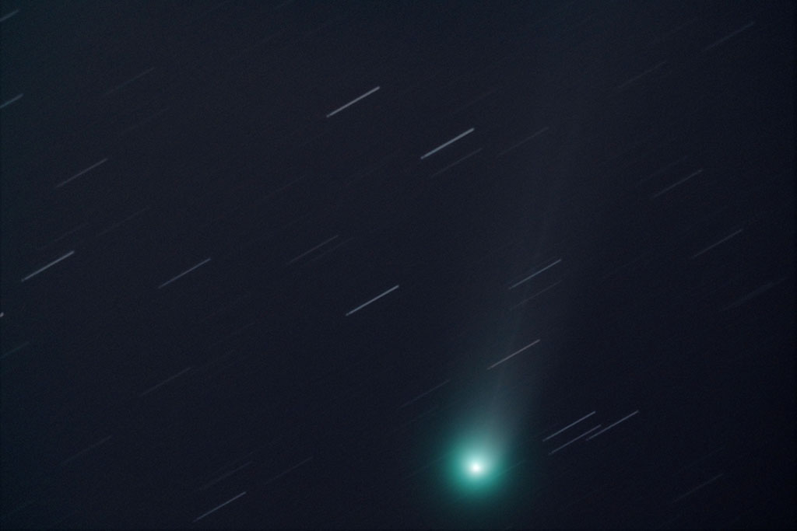

Shot with a Celestron Ultima 8 at prime focus (203 mm), Canon EOS 1100D, LPR filter and f/6,3 focal reducer. 53 of 1 minute each, 6400 ISO/ASA. Slightly cropped field of view. κ Corona Borealis is out of view near the right margin.
29 darks, 41 flats, and 31 bias
North is up/right.
Tracking with PhD with a Starlight Lodestar in OAG, stacking with DSS, processing with CS5 (levels, curves, downsize and JPG conversion)

2013 © Jordi Íñigo Griera | astrosurf.com/jig